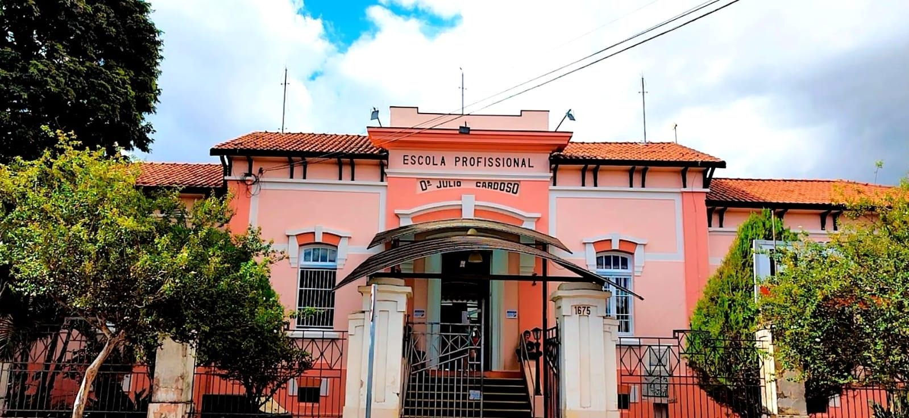

ETEC esportes é um projeto criado pelo Professor Sebastiao Vilela Rosa, inicialmente começado por atividades extra curriculares, mas, atualmente é uma nova forma de integraçao da escola com seus alunos, por meio do esporte.
Nesses anos a escola esta se tornando um polo nao somente de eduacaçao e tecnologia, mas sim, uma instituiçao capaz de trazer uma convivencia com o aluno atraves dos esportes.


A unidade, também conhecida como Industrial, foi implantada em 1924, com o nome de Escola Profissional de Franca. Instalada como Estabelecimento Masculino de Educação, contava, na ocasião, com 160 alunos matriculados nos Cursos Industriais Básicos de Mecânica de Máquinas e Marcenaria. A partir de 1927 a escola começou a receber alunas, depois da implantação dos cursos de Corte e Costura, Rendas e Bordados, Flores e Chapéus, Roupas Brancas, Pintura e Decoração. A Etec passou por várias mudanças de denominação: Escola Profissional de Franca (1924); Escola Profissional Mista (1933); Escola Industrial (1945) e Ginásio Industrial (1965), mas sempre preservou o nome do Patrono, Júlio Cardoso. Em 1994, a instituição foi incorporada ao Centro Paula Souza